Quadcopter Package Delivery
This example models a quadcopter that navigates a path to deliver a package. The body was designed in CAD and imported into Simscape Multibody. The electric motors capture the dynamics of the power conversion in an abstract manner to enable fast simulation. The package is released from the quadcopter when it reaches the final waypoint and the release criteria are met.
Contents
Model

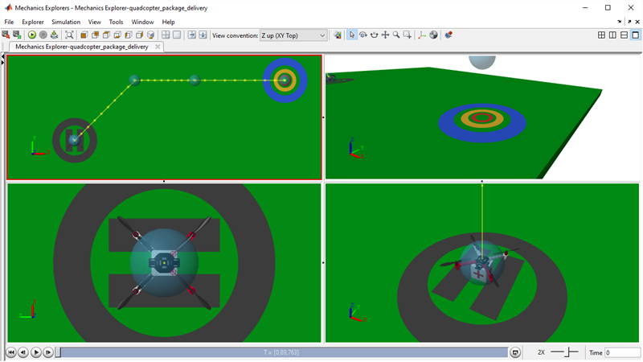
Quadcopter Subsystem

Body Subsystem
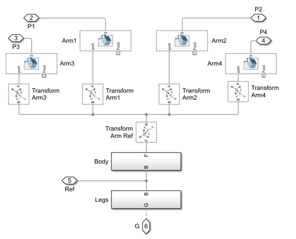Motors Subsystem

Maneuver Controller
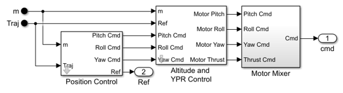Simulation Results from Simscape Logging: Path 1
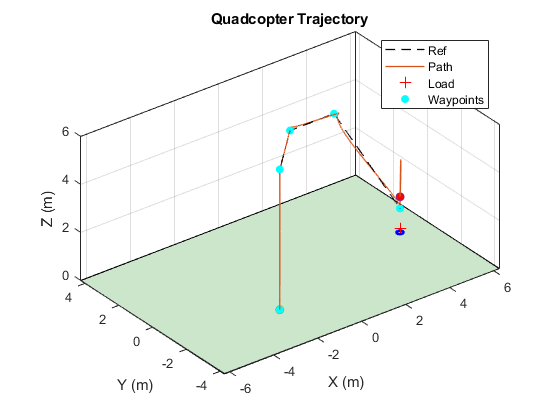 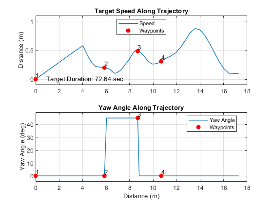Simulation Results from Simscape Logging: Path 2
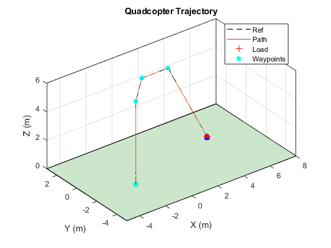 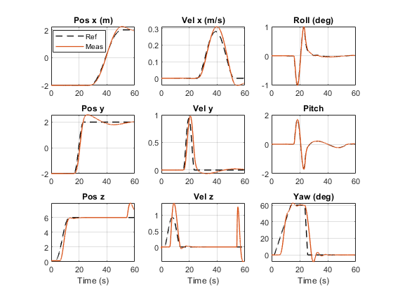Simulation Results from Simscape Logging: Path 3
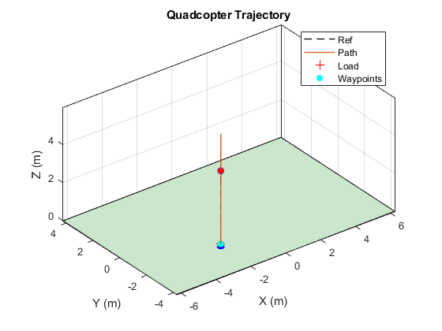 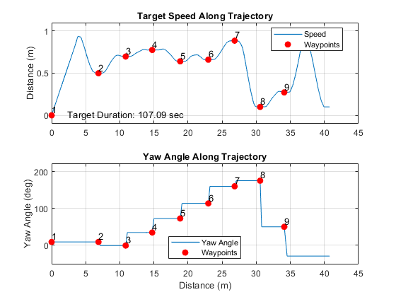Parameter Sweep: Package Mass
Using parallel computing we vary the mass of the package to see its effect on the quadcopter trajectory.
Elapsed Simulation Time Single Run: 30.134 [14-Oct-2021 13:47:40] Checking for availability of parallel pool... Starting parallel pool (parpool) using the 'local' profile ... Connected to the parallel pool (number of workers: 2). [14-Oct-2021 13:48:16] Starting Simulink on parallel workers... [14-Oct-2021 13:48:37] Loading project on parallel workers... [14-Oct-2021 13:48:37] Configuring simulation cache folder on parallel workers... [14-Oct-2021 13:48:45] Transferring base workspace variables used in the model to parallel workers... [14-Oct-2021 13:48:48] Loading model on parallel workers... [14-Oct-2021 13:49:11] Running simulations... [14-Oct-2021 13:50:56] Completed 1 of 10 simulation runs [14-Oct-2021 13:50:57] Completed 2 of 10 simulation runs [14-Oct-2021 13:51:14] Completed 3 of 10 simulation runs [14-Oct-2021 13:51:16] Completed 4 of 10 simulation runs [14-Oct-2021 13:51:33] Completed 5 of 10 simulation runs [14-Oct-2021 13:51:35] Completed 6 of 10 simulation runs [14-Oct-2021 13:51:52] Completed 7 of 10 simulation runs [14-Oct-2021 13:51:53] Completed 8 of 10 simulation runs [14-Oct-2021 13:52:10] Completed 9 of 10 simulation runs [14-Oct-2021 13:52:11] Completed 10 of 10 simulation runs [14-Oct-2021 13:52:12] Cleaning up parallel workers... Elapsed Sweep Time Total: 147.00 Elapsed Sweep Time/(Num Tests): 14.70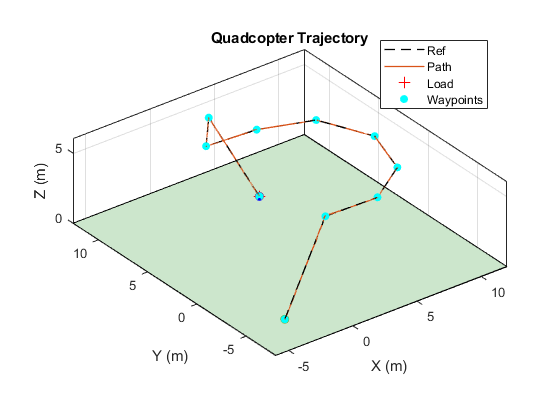 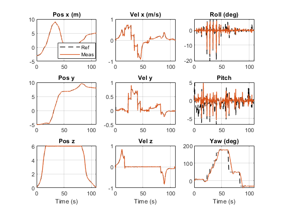
Parameter Sweep: Trajectory Speed
Using parallel computing we vary the target speed of the quadcopter and see if the quadcopter can follow the target path.
Elapsed Simulation Time Single Run: 67.45 [14-Oct-2021 13:54:12] Checking for availability of parallel pool... Starting parallel pool (parpool) using the 'local' profile ... Connected to the parallel pool (number of workers: 2). [14-Oct-2021 13:55:04] Starting Simulink on parallel workers... [14-Oct-2021 13:55:29] Loading project on parallel workers... [14-Oct-2021 13:55:29] Configuring simulation cache folder on parallel workers... [14-Oct-2021 13:55:38] Transferring base workspace variables used in the model to parallel workers... [14-Oct-2021 13:55:42] Loading model on parallel workers... [14-Oct-2021 13:56:16] Running simulations... [14-Oct-2021 13:58:19] Completed 1 of 8 simulation runs [14-Oct-2021 13:58:21] Completed 2 of 8 simulation runs [14-Oct-2021 13:58:36] Completed 3 of 8 simulation runs [14-Oct-2021 13:58:37] Completed 4 of 8 simulation runs [14-Oct-2021 13:58:50] Completed 5 of 8 simulation runs [14-Oct-2021 13:58:52] Completed 6 of 8 simulation runs [14-Oct-2021 13:59:02] Completed 7 of 8 simulation runs [14-Oct-2021 13:59:04] Completed 8 of 8 simulation runs [14-Oct-2021 13:59:05] Cleaning up parallel workers... Elapsed Sweep Time Total: 117.00 Elapsed Sweep Time/(Num Tests): 14.62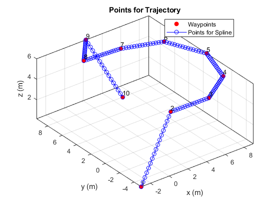 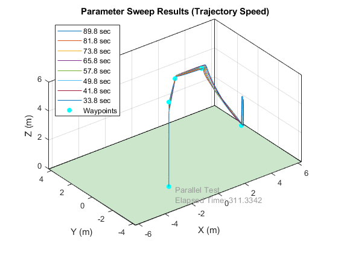
 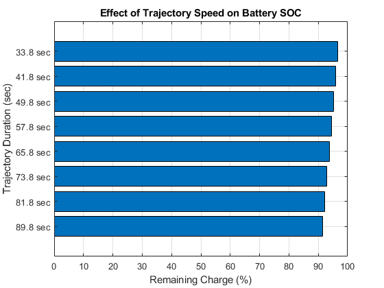
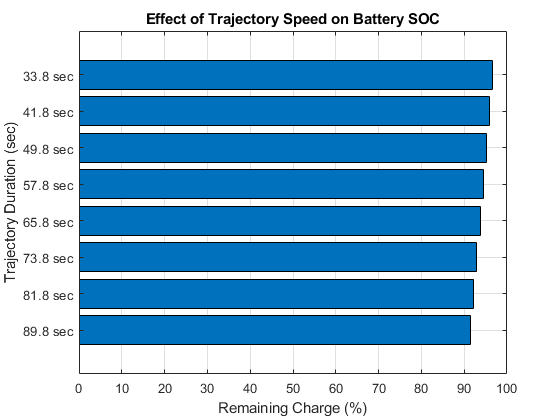